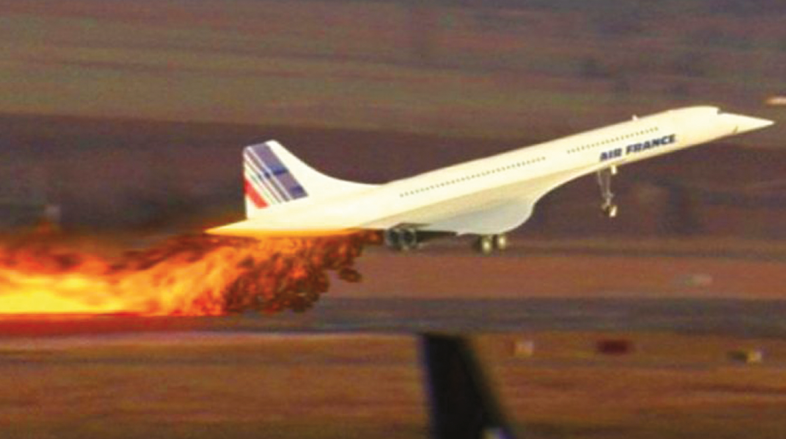
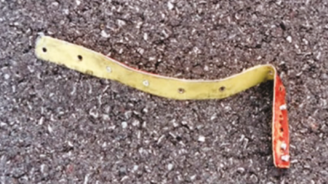
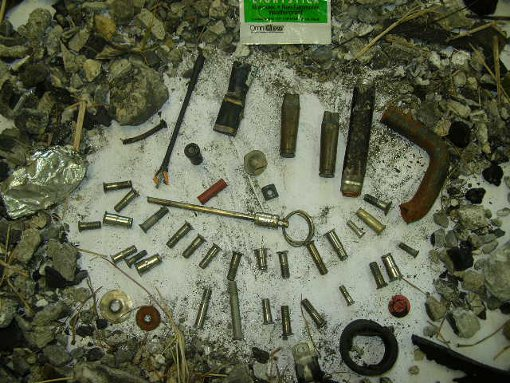
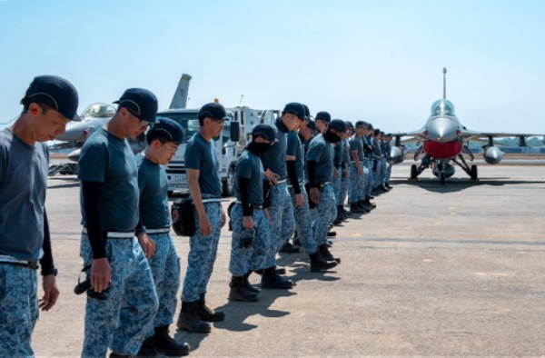
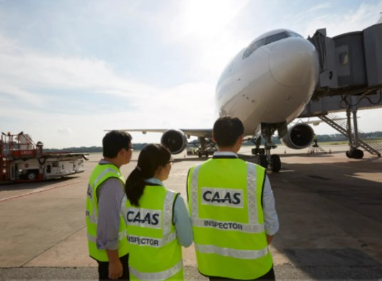
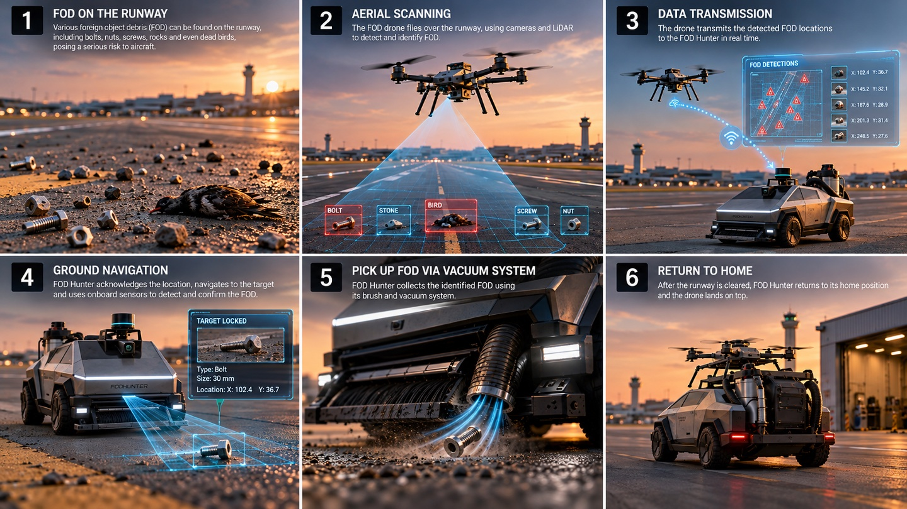

Foreign Object Debris,
small objects that cause massive headaches.
in this section, we will discuss the problem on a macro level and analyse existing solutions
A case study: Air France Flight 4590

The need to move from periodic manual sweeps to automated, real-time Foreign Object Debris (FOD) detection was made painfully clear by the loss of Air France Flight 4590 in July 2000 (BEA, 2002). A titanium alloy strip that had fallen from an earlier flight cut the Concorde's tyre and sent a large piece of it into the underside of the left wing. This punctured a fuel tank, shortly after which the engines caught fire and lost power. The aircraft crashed into a nearby hotel two minutes after takeoff, killing all 109 people aboard and four people on the ground.

The global cost of FOD
Estimates of what FOD costs the global aviation industry each year now range up to USD 22.7 billion, up from earlier estimates of USD 14 billion (2022) and USD 4 billion (2015). The Federal Aviation Administration projects that investment in current FOD technologies shows a net financial benefit, with a break-even period of 1 to 9 years. These trends underscore the growing demand for an automated solution to this global aviation headache.

Closer to home: Singapore's manpower challenge
Singapore is facing declining birth rates, which means less manpower for its conscript army. In a 2022 parliamentary reply, the then Minister for Defence, Dr Ng Eng Hen, described low fertility as a significant structural challenge for the SAF, one that has forced a re-look across the entire SAF "to leverage technology to improve manpower productivity" (MINDEF, 2022).
This is exactly what our project strives to do: use technology to take repetitive, manpower-intensive FOD work off people's hands.
Who is affected by the problem?
Locally

Image to be added
Image to be addedNot only local, but global
There are many airports around the world. Take the United States as an example: of the roughly 3,300 airports in the FAA's National Plan of Integrated Airport Systems, only about 30 are large, high-traffic hubs (FAA, NPIAS). The thousands of smaller airports that handle medium to low air traffic still need to keep their runways clear of FOD to the same standard, with less manpower.
Stakeholder map
Interviews
We spoke to many stakeholders. Names are withheld to protect the interviewees. Here are the full interview transcripts:
Show transcript · Mr Industry Partner
Show transcript · 3SG(NS) John Doe · Paya Lebar Air Base
Show transcript · LTA(NS) James Doe · Tengah Air Base
What we learned
| Who | What they said | Sentiment | Key insight |
|---|---|---|---|
| 3SG(NS) John Doe RSAF technician, Paya Lebar Air Base | "Walk and broom. Walk and broom… Just a normal broom. In fact, it makes more FOD than it cleans up." | Frustration | When the sweeper contractor is off duty, crews clear ~4 km of runway on foot with brooms. |
| "The big sweeper does not pick up the small pieces. It will always miss the small pieces." | Negative | Small items like rivets, the ones that actually cause damage, slip past current sweepers. | |
| "The entire air base goes down to do FOD walk together… And even then it takes us one hour to clean." | Frustration | More manpower doesn't scale: a whole-base FOD walk still takes about an hour. | |
| "[A rivet] went into the prop, and then they have to replace the entire thing." | Negative | A single small part can mean a costly engine or propeller replacement (C-130 case). | |
| "The paperwork to get it on takes so long that… once every couple months just to show for publicity, we'll fly it." | Frustration | Airspace permissions make on-base drone use impractical. | |
| LTA(NS) James Doe Air traffic controller, Tengah Air Base | "It's quite crude, but they just want to say on paper that you can do it." | Negative | Current RSAF drone checks are manual visual reviews, flown only 1–2 times a month. |
| "It could play a huge part into making the runway operational again." | Positive | Biggest value: faster runway recovery after a crash, when every small fragment must be found. | |
| Mr Industry Partner | "There's no fixed route around the runway. It's pretty random; they go left, right, center." | Negative | Today's inspection is two NSFs eyeballing from a truck at ~40 km/h, with no systematic coverage. |
| "Autonomous vehicle means servicemen can be released for other critical roles, given that the armed forces is shrinking." | Positive | Autonomy frees manpower as the SAF shrinks with lower birth rates. | |
| Ms CAAS Representative CAAS, 20+ years at Changi | "You only get 5 minutes… For that extra minute that I give you, I lose one traffic." | Insight | Civil runways allow ~5-minute inspection slots; speed matters more than anything. |
| "You want a drone, but yet you want precision. You want to be able to cover 4 km… It's not so possible." | Negative | There is a trade-off between speed and accuracy. | |
| "By investing in iFerret, we effectively shaved off a lot of time… every minute is money." | Positive | Automated detection pays for itself in runway time, but false alarms still need a human to validate. |
Five operational findings
1. Current workflow: Two-person vehicle patrols, contracted sweepers, manual broom walks, and periodic base-wide safety sweeps remain central to runway inspection.
2. Operational pain points: Visual inspection at speed creates fatigue and uncertainty; brooms can add debris, while leaf blowers can move FOD into nearby grass.
3. Debris profile: Common targets include screws, rivets, rocks, glass, animal remains, plastic, wood, and loose nails. Small objects can be less than 2 cm and collections are often only handful-sized.
4. UAV constraints: Drone operations require airspace clearance and can be limited to occasional flights, so the ground robot needs an independent fallback mode.
5. Stakeholder value: The strongest benefits are more frequent inspection, reduced repetitive manpower, faster emergency runway recovery, and a reliable system that is practical to deploy.
Engineering translation: FOD Hunter should detect small debris, distinguish true objects from stains and bird droppings, operate independently when UAV clearance is unavailable, and use a fast transit mode followed by a slower precision collection mode.
Existing solutions either detect FOD or collect it, but rarely do both well. The map below places each solution by its detection and collection performance. Click any solution to see how it works, what it does well and where it falls short.
User journey

Image to be added- FOD on the runwayVarious foreign object debris can be found on the runway, including bolts, nuts, screws, rocks and even dead birds, posing a serious risk to aircraft.
- Aerial scanningThe FOD drone flies over the runway, using cameras and LiDAR to detect and identify FOD.
- Data transmissionThe drone transmits the detected FOD locations to FOD Hunter in real time.
- Ground navigationFOD Hunter acknowledges the location, navigates to the target and uses its onboard sensors to detect and confirm the FOD.
- Pick up FOD via vacuum systemFOD Hunter collects the identified FOD using its brush and vacuum system.
- Return to homeAfter the runway is cleared, FOD Hunter returns to its home position and the drone lands on top.
Demonstration: FOD Hunter × FOD Argus
Simulation of the full workflow: FOD Argus (UAV) patrols the runway on a pre-planned path and reports detected FOD, and FOD Hunter (UGV) is dispatched to clear it.
Why a multi-robot approach?
Differentiating factor: productivity and long-term savings
In 2016, a research study by Savaş Öztürk and Ahmet Emin Kuzucuoğlu compared a five-year projection of the cost and performance of a manual solution against an autonomous solution at Istanbul Atatürk Airport, working with information from a simulated detection device.
- Manual solution: driving a truck on a fixed route to pick up FOD (as they currently do).
- Autonomous solution: deploying a fleet of robots (5, 10, 15 or 20) at evenly (or optimally) spaced stations to pick up FOD.
The research conducted by Savaş Öztürk and Ahmet Emin Kuzucuoğlu (2016) establishes the foundational precedence and theoretical bedrock for FOD HUNTER. In their seminal paper, “A Multi-Robot Coordination Approach for Autonomous Runway Foreign Object Debris (FOD) Clearance,” the authors developed a comprehensive experimental framework simulating runway-clearance operations at Istanbul Atatürk Airport.
Their study compared traditional manual collection, which relies on dispatching human-operated “Follow-Me” trucks, against three progressive phases of automated multi-robot coordination (ASP1-ASP3). These phases used heat-map clustering and the Hungarian (Kuhn-Munkres) algorithm for optimal task allocation.
Scenario comparison and sensitivity heat map from the study
The complete operational comparison reproduced from Öztürk and Kuzucuoğlu (2016) directly integrates the operational cost-delay parameters with the five-year sensitivity heat map across Istanbul Atatürk Airport operational simulations:
| ASP3 | ASP2 | ASP1 | MS | ||||||||||||
|---|---|---|---|---|---|---|---|---|---|---|---|---|---|---|---|
| 20 robots | 15 robots | 10 robots | 5 robots | 20 robots | 15 robots | 10 robots | 5 robots | 20 robots | 15 robots | 10 robots | 5 robots | 5 trucks | 3 trucks | 1 truck | |
| BASE COST ($) → | 2.660.000 | 2.282.500 | 1.905.000 | 1.527.500 | 2.660.000 | 2.282.500 | 1.905.000 | 1.527.500 | 2.660.000 | 2.282.500 | 1.905.000 | 1.527.500 | 2.825.000 | 1.975.000 | 1.125.000 |
| AVERAGE DELAY TIME FOR EACH FOD COLLECTION OPERATION (s.) → | 626 | 635 | 648 | 1057 | 787 | 853 | 836 | 1331 | 598 | 796 | 901 | 1166 | 853 | 989 | 1468 |
| COST OF DELAY AT EACH OPERATION (USAGE) ($) → | 15.638 | 15.875 | 16.205 | 26.433 | 19.670 | 21.328 | 20.890 | 33.278 | 14.955 | 19.893 | 22.533 | 29.153 | 21.323 | 24.728 | 36.698 |
The colours represent the most appropriate approach for each usage frequency (row-by-row ranking): green is cheapest and red is most expensive.
ASP3 · 10 robots
| Delay cost per op × ops | $16,205 × 500 |
| Delay cost | $8,102,500 |
| + Base cost | $1,905,000 |
| 5-year total | $10,007,500 |
MS · 1 truck
| Delay cost per op × ops | $36,698 × 500 |
| Delay cost | $18,349,000 |
| + Base cost | $1,125,000 |
| 5-year total | $19,474,000 |
Saved with ASP3 over 5 years
This gives us the confidence to move forward with the multi-robot approach: it is not only possible with technology, but also economically viable.
Key findings
- Dramatic reduction in runway downtime: Traditional manual dispatch using a single truck required an average runway-closure time of 1,468 seconds (approximately 24.5 minutes) per clearance event. An optimised fleet of 10 coordinated autonomous rovers (ASP3) reduced the average clearance downtime to 648 seconds (approximately 10.8 minutes), representing a reduction of more than 56% in operational closure time.
- Nearly 50% reduction in five-year financial costs: Including capital expenditure, 24/7 personnel salaries, vehicle maintenance, and airport delay penalties calculated at USD 1,500 per minute of runway closure, the traditional manual truck system reached USD 19,473,750 over five years. The 10-robot autonomous system reduced the burden to USD 10,007,500, delivering USD 9,466,250 in net economic savings, or approximately a 48.6% lifecycle cost reduction.
Integrating this bedrock into the FOD HUNTER narrative: This empirical research demonstrates that a multi-robot autonomous solution is not merely theoretical. It is a commercially viable strategy capable of reducing airfield downtime, removing human workers from active taxiway hazards, and cutting long-term FOD maintenance costs.
By adopting Öztürk and Kuzucuoğlu’s multi-agent coordination framework as a foundation, FOD HUNTER aims to translate and scale these results for high-density international aviation hubs such as Singapore Changi Airport:
- Productivity and throughput: Integrating the autonomous UGV fleet directly with fixed airfield detection systems, such as Changi’s iFerret cameras, enables immediate direct-path dispatch without search overhead, targeting clearance windows under five minutes.
- Enhanced safety standards: The system replaces manual visual sweeps on hot asphalt and removes ground personnel from hazardous jet-blast zones and active traffic.
- Economic scalability: At high-traffic airports where slot delays carry extreme financial penalties, scaling the UGV platform amplifies the multi-million-dollar return on investment demonstrated in the literature.
Our solution and value proposition statement
low to moderate air traffic airports that struggle with effective use of manpower,
automated solution provides guaranteed clearance of FOD on the runway, while staff focus on more critical jobs,
the current manual, time-consuming and laborious processes of clearing FOD.
Value proposition map
Value proposition fit
Each customer pain and gain is answered by a FOD Hunter feature.
| Value map | Customer map | |
|---|---|---|
| Products and services → Jobs | ||
| Automated swarm of FOD detection and collection | → | Runway, ground operations and FOD remediation teams |
| Pain relievers → Pains | ||
| Less laborious FOD process | → | Extremely laborious FOD process |
| Less manpower required for FOD | → | Manpower-intensive FOD process |
| Automated solution decreases mundane tasks | → | Repetitive and mundane tasks |
| Costs less overall in 5 years | → | Expensive cost of FOD |
| Gain creators → Gains | ||
| Staff can be released for more critical roles | → | Meaningful deployment of manpower |
| Higher accuracy of FOD detection | → | Safer runways |
| Higher frequency of inspection and intervention | → | Increased productivity |
Additional benchmarking
Performance specifications (FAA AC 150/5220-24 benchmark)
Regulatory operational performance requirements defined under Federal Aviation Administration Advisory Circular 150/5220-24 for automated FOD detection categories:
| Sensing Category | Standard Reference Target | Required Detection Range | Required Accuracy / Operating Conditions |
|---|---|---|---|
| Stationary Radar E-band (71–86 GHz) / W-band (92–100 GHz) |
Standard metal cylinder $\varnothing 38\text{ mm} \times 31\text{ mm}$ height |
$\ge 1,000\text{ m}$ | Location accuracy within $\le 5\text{ m}$; all-weather penetration (rain, fog, darkness). |
| Stationary Electro-Optical HD Multi-megapixel arrays + AI analytics |
Small optical object $20\text{ mm}$ dimension |
$\ge 300\text{ m}$ | Ambient daytime lighting; high-contrast visual identification. |
| Stationary Hybrid Radar + Near-IR / PTZ Optical Co-location |
Small debris object $20\text{ mm}$ dimension |
Full Runway Width ($\approx 60\text{ m}$ span) |
Covers entire lateral runway cross-section with automated cross-sensor verification. |
| Mobile Vehicle Radar Vehicle-mounted FMCW / MMW radar |
Standard metal cylinder $\varnothing 38\text{ mm} \times 31\text{ mm}$ height |
$183\text{ m} \times 183\text{ m}$ scan area | Continuous scanning while vehicle travels at operational speeds up to $48\text{ km/h}$. |
Analysis of existing airside UGV solutions
Table 3.2: Benchmarking current commercial and research autonomous ground vehicles deployed for airfield maintenance:
| Solution | Primary Detection Technologies | Key Features | Limitations / Drawbacks |
|---|---|---|---|
| Airtrek Groundwatch Autonomous Airfield Rover |
Multi-camera arrays, long-range LiDAR, Onboard Edge AI |
• Dual wingtip deployment configuration • Operator live view & aircraft exterior inspection • High-accuracy GPS target tagging |
❌ Lacks Physical Collection Diagnostic-only; cannot physically pick up or clear detected debris, still requiring human dispatch. |
| Roboxi Multi-Purpose Airfield Patrol |
AI optical vision, multi-spectral thermal sensors, high-precision GNSS |
• Modular payload architecture • Acoustic bird deterrent capabilities • Runway edge-light bulb & surface pavement inspection |
⚠️ High Weight & Cost Substantial payload mass and elevated capital cost; complex software stack with shorter battery runtime. |
| Guimu Robot Subsurface Pavement Diagnostic |
High-frequency Ground-Penetrating Radar (GPR), 3D LiDAR, HD cameras |
• Deep sub-surface structural mapping (voids, moisture, base erosion) • Fast coverage: $7,500\text{ m}^2/\text{hr}$ at $20\text{ km/h}$ • Long 8-hour operational battery runtime |
❌ Zero FOD Retrieval Engineered strictly for subsurface civil pavement structural analysis; lacks any surface FOD remediation mechanism. |
Key Research & Engineering Gap: Existing airside UGVs fall into two extremes: either heavy, costly diagnostic inspection rovers (Airtrek, Roboxi) that only log coordinates without physical retrieval, or civil engineering machines (Guimu) built exclusively for sub-surface radar. FOD Hunter uniquely couples high-speed aerial cueing (UAV) with targeted, active physical extraction (UGV) to achieve true closed-loop "Find-and-Fix" airside remediation.
Progress to date
Project timeline →Multi-domain Phase 1 velocity tracking across core capstone engineering workstreams.